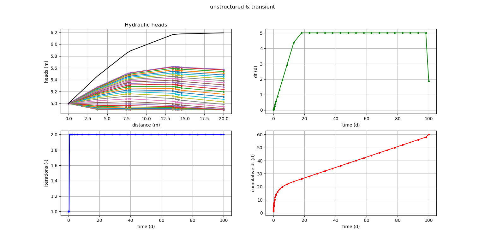
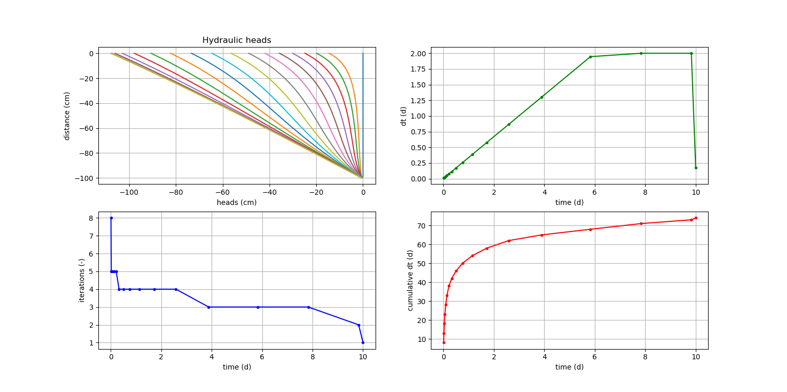

Welcome to Flow’s documentation!¶
Contents:
What is this Flow software package for?¶
- what
Definition of this software package.
- how
This is a module that is built for the python programming language.
- what not
This is not a complete fully dimensional flow simulator.
Flow example for a saturated situation¶
In this example a saturated flow situation is presented.
Flow example for an unsatured situation¶
In this example an unsaturated flow situation is presented.